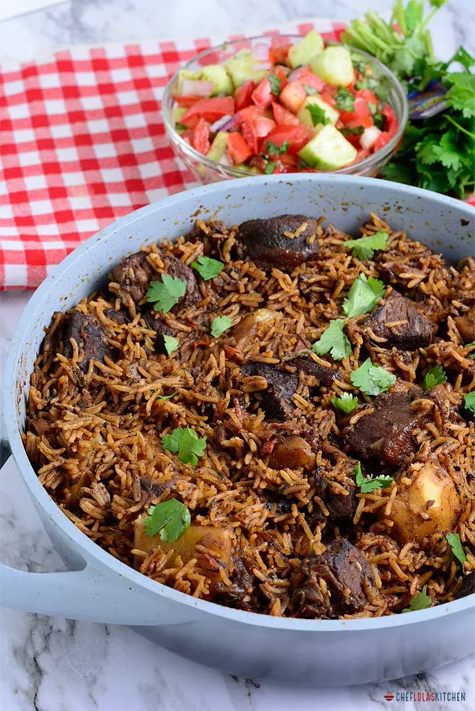

Simple beef pilau

Know it;
Good beef pilau is a great recipe to have in your arsenal, learn how to make it
SERVING
2 to 3 people
TOTAL TIME 1 hour 30 minnutes
Ingredients
You will need;
- 2 cups of washed rice.
- 3 large onions.
- 3 garlic cloves, crushed.
- 1 tablespoon of crushed ginger paste.
- 1 teaspoon of black peppercorn seeds
- 1 teaspoon of cumin seeds
- 1 teaspoon of cloves
- 4 cups of broth or water
Directions
This is how we do it;
- Wash your rice and set it aside to dry. Meanwhile, in a large pan, cook your beef till golden brown. Once ready, add in your onions and oil, fry & season with salt.
- Add in your ginger and crushed garlic. Let it cook for a while before adding in your black pepper, cumin, cloves, and tropical heat pilau masala.
- Once your spices are cooked through, add in your washed rice, broth, and/or water. We did one cup of rice to two cups of broth but this is dependent on the rice you are cooking.
- Cover with foil once most of the broth has simmered. Serve with kachumbari and enjoy!
pilau is sweet when served hot. A side plate of avocado wont hurt.